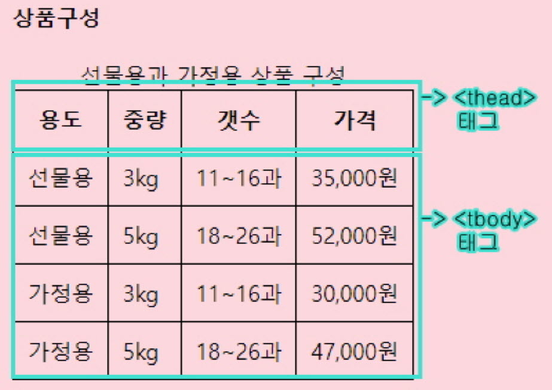
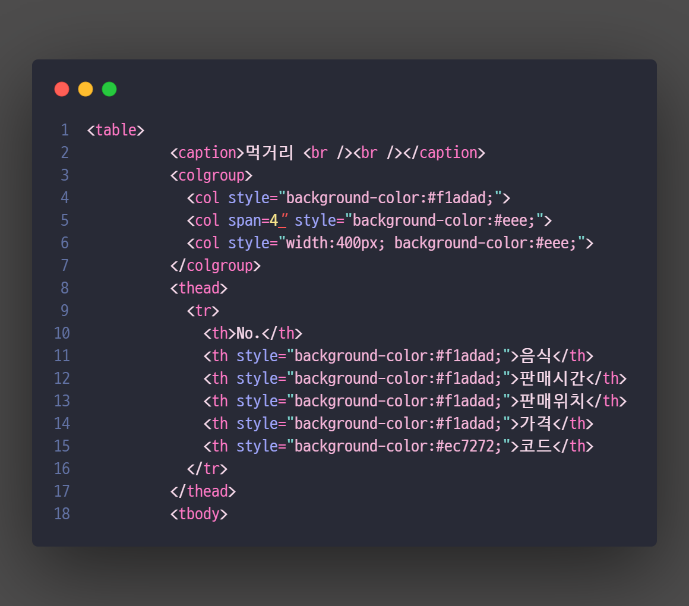
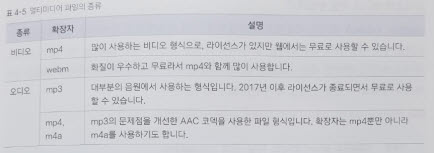
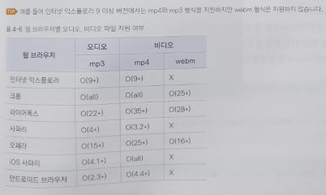

04-1. 텍스트 입력하기
1. <hn></hn> 태그
h는 heading의 줄임말. n에는 1~6의 숫자가 들어가며 제목 택스트를 크기별로 표시. <h1>이 가장 큰제목 <h2>,<h3>...<h6>순서대로 작아짐.
안녕! 나는 h태그중 제일 큰 <h1> 태그야!
안녕! 나는 <h2> 태그야!
안녕! 나는 <h3> 태그야!
안녕! 나는 <h4> 태그야!
안녕! 나는 <h5> 태그야!
안녕! 나는 h태그중 제일 작은 <h6> 태그야!
2. <p></p>와 <br /> 태그
<p> : 문단(paragraph)을 정의함. 단락. <p>와 </p> 사이에 텍스트 입력시 앞뒤로 빈줄이 생기며 텍스트 단락이 만들어짐.
<br /> : 단순 행 바꿈(line-break)을 정의함. 닫는 태그가 필요없음.
<p> 와 <br /> 의 차이 : <br />을 두 번 사용하면 빈 줄이 생기면서 텍스트 단락이 나뉜것 처럼 화면에 표시되지만 실제로는 단락이 만들어진 게 아니므로 단락을 만들때에는 <p> 태그를 사용해야 함.
이하이 - ONLY
Be my only one 이렇게 부르고 싶은 이름 내 곁에 손을 잡고서 같이 걸어요
비가 오는 밤에도 외로웠던 낮에도 그대 환한 빛깔을 내게 가득 칠해줘요
내가 더 잘할게요 이렇게 같이 있어준다면
Now I believe 라랄라랄라라 부르는 노래
찾고 찾고 찾아 헤매이던 그대와
My, oh my, oh my, oh 내 사랑 Be my only love
3. <blockquote></blockquote> 태그
인용문. 태그안의 내용을 인용문으로 알고 다른 텍스트보다 약간 들여 씀. 화면 낭독기에서도 다른 텍스트와 구분함
이하이 - ONLY
Be my only one 이렇게 부르고 싶은 이름 내 곁에 손을 잡고서 같이 걸어요
비가 오는 밤에도 외로웠던 낮에도 그대 환한 빛깔을 내게 가득 칠해줘요
내가 더 잘할게요 이렇게 같이 있어준다면
Now I believe 라랄라랄라라 부르는 노래
찾고 찾고 찾아 헤매이던 그대와
My, oh my, oh my, oh 내 사랑 Be my only love
걸어 걸어가는 발걸음마다
기분 좋아 꼭 둘이서 추는 춤 같아
My, oh my, oh my, oh 내 사랑 Be my only love
4. <strong></strong>과 <b></b> 태그
<strong> : 굵게 강조할 텍스트
<b> : 굵게 표시할 텍스트
보기엔 차이가 느껴지지 않지만 화면 낭독기에서는 구분을 하기때문에 경고나 주의 사항처럼 중요한 내용을 강조할때는 <strong>, 단순히 글자만 굵게 표시할 때는 <b> 태그를 사용함.
이하이 - ONLY
Be my only one 이렇게 부르고 싶은 이름 내 곁에 손을 잡고서 같이 걸어요
비가 오는 밤에도 외로웠던 낮에도 그대 환한 빛
깔을 내게 가득 칠해줘요
내가 더 잘할게요 이렇게 같이 있어준다면
Now I believe 라랄라랄라라 부르는 노래
찾고 찾고 찾아 헤매이던 그대와
My, oh my, oh my, oh 내 사랑 Be my only love
걸어 걸어가는 발걸음마다
기분 좋아 꼭 둘이서 추는 춤 같아
My, oh my, oh my, oh 내 사랑 Be my only love
Be my only one 이제는 숨기지 않고도 말할 수 있어
그렇게나 말하고 싶던 I say I love you
쉬고 싶은 밤에도 바쁘던 아침에도
그대 내게 쉴 곳을 마음속에 마련해요
내가 더 잘할게요 그 맘을 내게 나눠준다면
5. <em></em>과 <i></i> 태그
<em> : 강조(emphasis)를 뜻함. 문장중 특별히 강조하고 싶은 부분에 사용.
<i> : 이탤릭체(italic). 마음속의 생각, 용어, 관용구 등에 사용. 단순히 다른 텍스트와 구별하기위해 사용.
이하이 - ONLY
Be my only one 이렇게 부르고 싶은 이름 내 곁에 손을 잡고서 같이 걸어요
비가 오는 밤에도 외로웠던 낮에도 그대 환한 빛
깔을 내게 가득 칠해줘요
내가 더 잘할게요 이렇게 같이 있어준다면
Now I believe 라랄라랄라라 부르는 노래
찾고 찾고 찾아 헤매이던 그대와
My, oh my, oh my, oh 내 사랑 Be my only love
걸어 걸어가는 발걸음마다
기분 좋아 꼭 둘이서 추는 춤 같아
My, oh my, oh my, oh 내 사랑 Be my only love
Be my only one 이제는 숨기지 않고도 말할 수 있어
그렇게나 말하고 싶던 I say I love you
쉬고 싶은 밤에도 바쁘던 아침에도
그대 내게 쉴 곳을 마음속에 마련해요
내가 더 잘할게요 그 맘을 내게 나눠준다면
6. 다양한 텍스트 관련 태그
<abbr> : 줄임말을 표시하고 title속성 사용 가능.
귀여운 이모티콘 ヾ(≧▽≦*)o
<cite> : 웹 문서나 포스트에서 참고 내용을 표시.
"넌 새야. 너도 새라고해.", "네가 새면 나도 새야" - 영화, '노트북' 중
<code> : 컴퓨터 인식을 위한 소스 코드
function savetheLoocal() / function savetheLoocal()
<small> : 부가 정보초럼 작게 표시해도 되는 택스트.
가격: 13,000원 (부가세 별도)
<sub> : 아래첨자
물의 화학식은 H20
<sup> : 위 첨자
E = mc2
<s> : 취소선. 잘못된 텍스트를 강조해 올바를 텍스트를 일깨워주기 위함.
33,0000원19,000원
<u> : 밑줄
텍스트에 단순 밑줄 긋기
<ins> : 새로 업데이트 된 사항에서 추가 삽입 되는 내용
나는 새로운 내용을 이지롱
<del> : 삭제되는 내용
나는 삭제 된 텍스트 ok..bye...
04-2. 목록 만들기
웹 문서에서 목록은 단순히 어떤 항목을 나열할 때뿐 아니라 특히 CSS와 함께 사용해서 내비게이션을 만들거나 콘텐츠를 배치하는 등 다양한 용도로 사용
1. <ol></ol>
<ol> : 순서가 있는 목록. Ordered List. 어떤 과정을 순서로 설명할떄. <ol></ol>사이에 <li></li>를 삽입해 사용. 기본값 숫자 1, 2, 3....
- 식이섬유(채소)
- 단백질(고기)
- 탄수화물(밥)
type 속성으로 순서 모양을 바꿀수 있음.
type = "1" : 숫자 (기본값)
type = "a" : 영문 소문자
type = "A" : 영문 대문자
type = "i" : 로마 숫자 소문자
type = "I" : 로마 숫자 대문자
- type = "a" : 영문 소문자
- 식이섬유(채소)
- 단백질(고기)
- 탄수화물(밥)
- type = "A" : 영문 대문자
- 식이섬유(채소)
- 단백질(고기)
- 탄수화물(밥)
- type = "i" : 로마 숫자 소문자
- 식이섬유(채소)
- 단백질(고기)
- 탄수화물(밥)
- type = "I" : 로마 숫자 대문자
- 식이섬유(채소)
- 단백질(고기)
- 탄수화물(밥)
start 속성으로 시작번호를 바꿀수 있음.
살 안찌는 식사순서
- 식이섬유(채소)
- 단백질(고기)
- 탄수화물(밥)
2. <ul><ul>
<ul> : 순서가 없는 목록. Unordered List. 항목 앞에 작은 원이나 사각형을 붙여서 구분는데 이런 작을 그림을 불릿bullet이라고 함.
- 식이섬유(채소)
- 단백질(고기)
- 탄수화물(밥)
3. <dl></dl>, <dt></dt>, <dd></dd>
설명목록. 설명목올이란 이름과 값 형태로 된 목록. 마치 사전에서 단어명과 설명이 있는 모습과 비슷.
<dl>과</dl> 태그 사이에는 한 쌍의 <dt> 태그와 <dd> 태그를 넣음.
<dt> 태그 하나에 <dd> 태그를 여러개 사용할 수 있음.
<dl> : 설명 목록. Description List.
<dt> : 이름name
<dd> : 값value
- 당질이 적어 많이 먹어도 되는 것
- 채소
- 고기
- 당질이 많아 적게 먹어야 하는 것
- 쌀, 곡물, 구황작물
04-3. 표 만들기
1. 표 만들기
<table> : 표의 시작과 끝 / table
<caption>: 표의 제목, 생략가능
<tr> : 행 / row
<th>; : 제목행에 셀만들때. 진하게 표시되고 셀 안에서 중앙에 배열되어 다른내용보다 눈에 띔
<td> : 행 안에 셀을만듬 / cell
| 1행 1열 | 1행 2열 |
| 2행 1열 | 2행 2열 |
2. 표의 구조
일부 표에서는 제목이 표시된 셀과 자료가 표시된 셀 외에 표 아래쪽에 합치거나 요약 내용을 표시하기도함.
이런 표는 제목과 본문 그리고 요약이 있는 부분으로 표의 구조를 나누어 놓는 것이 좋음.
표의 구조를 지정하면 웹 브라우저 화면에서 보이진 않지만, 화면 낭독기나 자바스크립트(표의 본문이 길어 한 화면을 넘어갈 경우, 자바스크립트를 이용헤 <thead>와
<tfoot>태그는 표의 위아래에 고정하고 <hbody>태그만 스크롤 하게 만들수 있음 -> 이 방법은 내용이 긴 표를 여러 장 인쇄할 때도 가 장마다 표의 제목,
요약
부분이 자동으로인쇄 되므로 편리함.) 등에서 읽을 수 있음.
또한 CSS를 사용해 제목, 본문, 요약에 각각 다른 스타일을 적용할 수도 있음.
<thead> : 표의 제목 / head
<tbody> : 표의 본문 / body
<tfoot> : 표의 요약 / foot
상품구성
| 용도 | 중량 | 갯수 | 가격 | 현재 표 구조화 된 내용 |
|---|---|---|---|---|
| 선물용 | 3kg | 11~16과 | 35,000원 |  |
| 선물용 | 5kg | 18~26과 | 52,000원 | |
| 가정용 | 3kg | 11~16과 | 30,000원 | |
| 가정용 | 5kg | 18~26과 | 47,000원 |
3. 행이나 열을 합치는 rowspan, colspan
표는여러 셀로 구성됨. 행이나 여을 합치는 것은 실제로는 셀을 합치는 것이므로 <td>태그나 <th> 태그에서 이뤄짐.
colspan : 열끼리 합칠 때 사용.
4. 열을 묶어 주는 <col></col>, <colgroup></colgroup> 태그
꼭 <caption> 다음에 사용해야 함. 표의 내용이 시작되기 전에 열의 상태를 알려주는것. 특정 열에 배경색을 넣거나 너비를 바꾸기위해 원하는 열을 선택할때 사용.
<col> : 열을 1개만 지정. 스타일 속성을 지정하지 않을거라 해도 <colgroup> 안에 표 전체 열의 갯수만큼 <col> 태그를 넣어야함. 공통
스타일을 사용하기 위해 span 속성으로 묶어서 스타일 지정 하고 span 으로 묶어준만큼 <col> 삭제.
<colgrop> : <col> 태그를 2개이상 묶어서 사용.
| No. | 음식 | 판매시간 | 판매위치 | 가격 | 코드 |
|---|---|---|---|---|---|
| 1 | 입춘 전남 국수 | 11:00 ~ 16:00 | 목관아 주차장 | 7000원 |  |
| 2 | 제주 향토 음식 | 10:30 ~ 17:00 | 13000원 | ||
| 3 | 입춘 주전부리 | 10:30 ~ 17:00 | 푸른 잔디 | 3000원 ~ 8000원 | |
| 4 | 차 나눔 | 10:30 ~ 18:00 | 관덕정 마당 | 무료 |
04-4. 이미지 삽입하기
1. <img>
기본형 : <img src="이미지 파일 경로" alt="화면 낭독기, 이미지를 로드하시 못할시 대체용 텍스트">
웹에서 사용하는 이미지는 인터넷으로 전송해야 하므로 파일 크기가 크지 않으면서 화질이 좋아야함.
🖼 웹에서 사용하는 대표적인 이미지 파일 형식
- GIF (Graphic Interchange format)
- 표시할 수 있는 색상 수 256가지. 다른 이미지 파일 형식에 비해 파일 크기가 작어서 아이콘이나 불릿 등 작은 이미지에 사용.
- JPG/JPEG (Joint Photoographic Experts Group)
- GIF보다 색상과 명암을 다양하게 표현. 수정,저장 작업을 반복하면 화질이 떨어질수 있음.
- PNG (Portable etwork Graphic)
- 네트워크용으록발된 파일 형식. 색상을 다양하게 표현하면서 투명한 배경도 만들수있어 웹에서 가장 많이 사용.
- 단위 %
- 부모 너비와 높이를 기준으로 이미지 크기 결정.
2. 이미지 크기를 조절하는 width, height 속성
<img>태그로 파일을 삽입하면 원래 이미지 크기대로 표시. width, height 둘중 하나의 속성만 지정해도 나머지 속성은 자동으로 계산해 노출.
04-5. 오디오와 비디오 삽입하기
1. <object></object>, <embed>, <audio></audio>, <video></video>
- 1. <object>
- 오디오 파일뿐만 아니라 비디오, 자바 애플릿, PDF등 다양한 멀티미디어 파일 삽입할 때 사용.
- 기본형 : <object width="너비" height="높이" data="파일"></object>
- data속성에서 보여 줄 멀티미디어 파일을 지정. <object> 태그를 사용하여 웹 문서에 PDF 파일을 삽입하면 PDF 리더가 자동으로 포함되어 보여 줌.
이하이 - ONLY
- 3. <audio>, <video>
-
HTML4 까진 멀티미디어 파일을 삽입한 후 재생하라면 플러그인 프로그램이 따로 필요했으나 HTML5 웹 표준이 정해지면서 <audio> - 오디오파일 삽입,
<video> - 비디오파일 삽입 태그가 추가되면서 멀티미디어 파일을 삽입하고 바로 재생가능.
따라서 웹 브라우저에서 바로 멀티미디어 파일을 재생하기 때문에 브라우저마다 플레이어가 다름.(같은 브라우저라 하더라도 버전에 따라 지원 상황이 달라질수 있음.) -
기본형
<audio src="오디오 파일 경로"></audio>
<audio src="비디오 파일 경로"></audio> - 태그를 사용할때 오디오나 비디오 파일을 시작하거나 멈출 수 있는 컨트롤바룰 표시해 주는 controls 속성
-
<audio src="오디오 파일 경로 controls "></audio>
이하이 - ONLY
<video src="비디오 파일 경로 controls autoplay loop "></video>
비디오파일의 경우 너비값을 지정하지 않는 경우 웹브라우저에 가득 차게 나타나믈로 너빗값을 적절히 지정하는게 좋음
2. <audio>, <video> 태그의 속성
| 종류 | 설명 |
|---|---|
| controls | 플레이어 화면에 컨트롤 바를 표시 |
| autplay |
자동으로 실행. 대부분의 웹 브라우저에서는 소리가 있는 파일의 자동재생을 금하고 있음. Microsoft엣지는 자동재생됨. |
| loop | 반복 재생 |
| muted |
소리를 제거 <video>태그애서 muted속성 사용시 비디오가 자동재생됨. 핸드폰이나 태블릿의 웹 브러우정서는 자동재생 할수없음. |
| preload |
페이지를 불러올 때 파일을 어떻게 로딩할 것인지 지정. 기본값 preliad="auto" 사용값 종류 ㄴauto : 페이지가 로드될 때 브라우저가 전체 오디오 파일도 같이 로드. ㄴmetadata : 페이지가 로드될 때 브라우저가 메타데이터(metadata)만 로드. ㄴnone : 페이지가 로드될 때 브라우저가 오디오 파일을 로드 안함. |
| width, height | 너비, 높이 지정 |
| poster="파일 이름" | <video> 태그의 속성으로 비디오가 재생되기 전까지 화면에 표시될 포스터 이미지를 지정 |
3. 웹 브라우저에서 지원하는 멀티미디어 파일의 종류
 
04-6. 하이퍼링크 삽입하기
클릭하면 연결된 곳으로 연결되는 기능
링크가 걸린 텍스트나 이미지에 마우스를 가져가면 마우스 포인터가 손가락으로 바뀜.
* 속성
ㄴ target="_blank" : 새로운 탭에서 링크열기